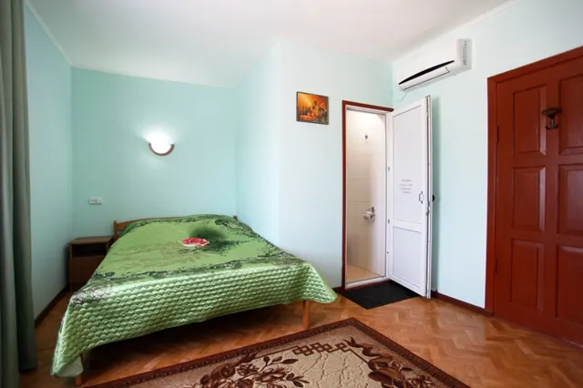
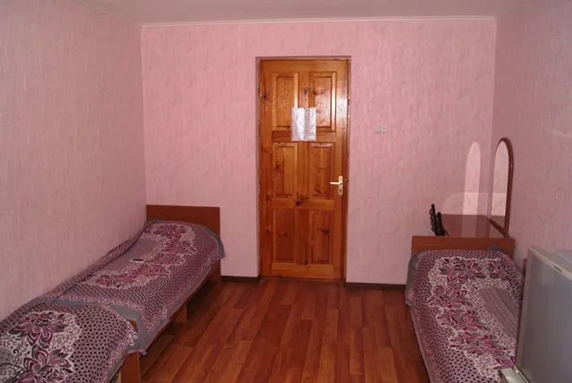
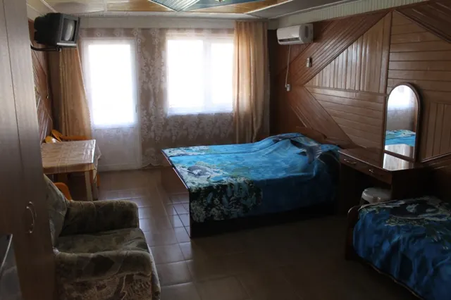

Номера и цены
Номера и цены
Пять типов номеров: от экономичных комнат до отдельного домика. Точную цену на ваши даты скажем по телефону +7 (918) 205-41-00.

«Стандарт»
Двуспальная кровать, санузел и душ в номере, туалетный и журнальный столики.
2 гостя + доп. место15 м²Душ в номереКондиционер
от 800 ₽ за сутки

«Домик»
Отдельный домик: односпальные кровати и кресло-кровать, свой санузел с душем.
3 гостя + доп. место20 м²Душ в домикеКондиционер
от 1 100 ₽ за сутки

«Эконом +»
Уютный номер, санузел с душем — на два номера.
2 гостя10–11 м²КондиционерТелевизор
от 600 ₽ за сутки

«Эконом» двухместный
Две односпальные кровати, санузел и душ на этаже. Второй этаж.
2 гостя12–13 м²Кондиционер
от 600 ₽ за сутки

«Эконом» трёхместный
Три спальных места, санузел и душ на этаже. Второй этаж.
3 гостя + доп. место12–13 м²Кондиционер
от 900 ₽ за сутки
Цены по сезонам
| Номер | Июнь | Июль | Август | Сентябрь |
|---|---|---|---|---|
| «Стандарт» | от 800 ₽ | от 1 200 ₽ | от 1 500 ₽ | от 800 ₽ |
| «Домик» | от 1 200 ₽ | от 1 800 ₽ | от 2 200 ₽ | от 1 100 ₽ |
| «Эконом +» | от 600 ₽ | от 900 ₽ | от 1 200 ₽ | от 700 ₽ |
| «Эконом» двухместный | от 600 ₽ | от 800 ₽ | от 1 100 ₽ | от 600 ₽ |
| «Эконом» трёхместный | от 900 ₽ | от 1 150 ₽ | от 1 500 ₽ | от 900 ₽ |
Цены за номер в сутки, ориентировочные, при проживании от 5 суток; на меньший срок цена выше. Окончательную цену уточняйте при бронировании.
Правила проживания
- Заездс 14:00
- Выезддо 12:00
- Срокот 5 суток; на меньший срок цена выше
- Детис 5 лет
- Животныене принимаем
- Курениев номерах нельзя, во дворе есть место для курения
- Тишинапосле 23:00
- Бельё и уборкасмена белья через 7 дней, уборка в номере — самостоятельно
- Бронированиепо телефону, с предоплатой; при отмене не позже чем за 20 суток предоплату вернём
Что есть для гостей
Бассейн 7,3 × 3,4 мЛетняя кухняМангалБеседкиWi‑Fi бесплатноКондиционер в номереТелевизор и холодильникСтиральная машина (платно)Утюг и гладильная доскаБесплатная парковкаВстреча на вокзале «Лазаревская»
Спросите о свободных датах — ответим и подберём номер
Сочи, Лазаревское, Марьинское шоссе, 64А · 20–25 минут пешком до пляжа